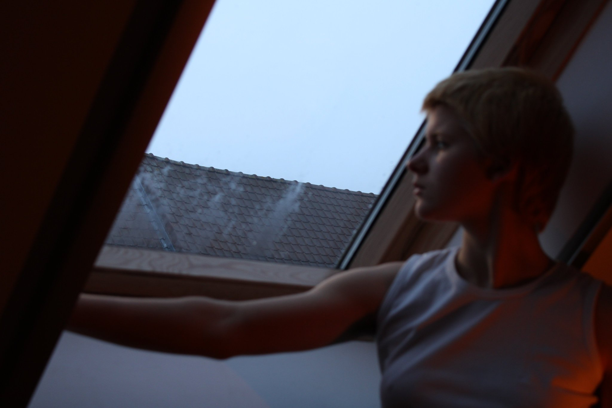
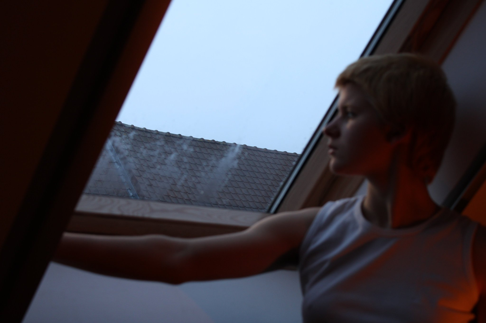

boys on film 4
 

My name is Sara Schelstraete. I am an art student in Bruges, Belgium. Feel free to contact me anytime if you’re interested in buying prints of my photographs. I will send them to you in a personalized package!

boys on film 4
boys on film 5

de Achterkant

de Sluitertijd

gip-beeld

Het Uitzicht

Sluitertijd

Portretjes van Jorik


Linkse Skaterjongens

Marceau in Gent

Melancholisch
Pepino

Portret van Emil

Simpen voor Jorik


Spinnenweb

Zijn Schoenen